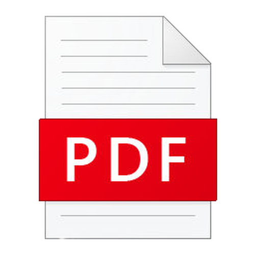
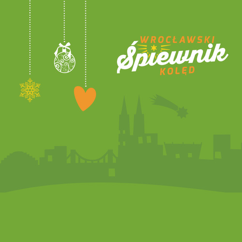

|
Pokaz slajdów programu PowerPoint |
 Dokument PDF |
|
Strona w przeglądarce |
Chwyty na czytnik |
|
Pokaż tylko akordy |
 [Link zewnętrzny z nutami] Wrocławski śpiewnik kolęd z nutami |
ADEA | ADhE AfishEA
A wczora z wieczora,
z niebieskiego dwora.
Przyszła nam nowina:
Panna rodzi Syna.
Boga prawdziwego,
nieogarnionego.
Za wyrokiem Boskim,
w Betlejem żydowskim.
Pastuszkowie mali
w polu wtenczas spali,
gdy Anioł z północy
światłość z nieba toczy.
Chwałę oznajmując,
szopę pokazując,
chwałę Boga tego,
dziś nam zrodzonego.
Tam Panna Dzieciątko,
miłe Niemowlątko,
uwija w pieluszki,
pośpieszcie pastuszki!
Natychmiast pastuszy
śpieszą z całej duszy,
weseli bez miary,
niosą z sobą dary.
Chcący widzieć Pana
oddają barana,
na kozłowym rogu
krzyczą chwałę Bogu.
Mądrości druhowie,
z daleka królowie,
pragną widzieć swego
Stwórcę przedwiecznego.
Dziś Mu pokłon dają
w ciele oglądają.
Cieszą podarkami
Więc i piosneczkami
Witaj, Zbawicielu
i Pocieszycielu!
Każdy się dziwuje,
że Bóg nas miłuje.
I my też pośpieszmy,
Jezusa ucieszmy
ze serca darami:
modlitwą, cnotami
Jezu najmilejszy,
ze wszech najwdzięczniejszy,
zmiłuj się nad nami
grzesznymi sługami
CG CFG | GCGa GCGC
1. Ach ubogi żłobie,
Cóż ja widzę w tobie?
Droższy
widok niż ma niebo,
W maleńkiej osobie.
2. Zbawicielu drogi,
Jakżeś to ubogi,
Opuściłeś
śliczne niebo,
Obrałeś barłogi.
3. Czyżeś nie mógł Sobie,
W największej ozdobie,
Obrać
pałacu drogiego,
Nie w tym leżeć żłobie?
4. Gdy na świat przybywasz,
Grzechy z niego zmywasz,
A
na zmycie tej sprośności,
Gorzkie łzy wylewasz.
5. Któż tu nie struchleje,
wszystek nie zdrętwieje
któż Cię widząc płaczącego,
łzą się nie zaleje.
6. Na twarz upadamy,
czołem uderzamy,
witając Cię w
tej stajence
między bydlętami.
7. Zmiłuj się nad nami,
obmyj z grzechów łzami,
przyjmij serca te skruszone,
które Ci składamy.
DA DAD DGE7A | DG DGDA DGDA DGAD
1. Anioł pasterzom mówił:
Chrystus się wam narodził
w
Betlejem, nie bardzo podłym mieście.
Narodził się w ubóstwie
Pan wszego stworzenia.
2. Chcąc się dowiedzieć tego
poselstwa wesołego,
bieżeli do Betlejem skwapliwie.
Znaleźli dziecię w żłobie,
Maryję z Józefem.
3. Taki Pan chwały wielkiej,
uniżył się wysoki,
pałacu
kosztownego żadnego
nie miał zbudowanego
Pan waszego
stworzenia.
4. O dziwne narodzenie,
nigdy niewysłowione !
Poczęła
Panna Syna w czystości,
porodziła w całości
Panieństwa
swojego.
5. Już się ono spełniło,
co pod figurą było:
Arona
różdżka ona zielona
stała się nam kwitnąca
i owoc rodząca.
6. Słuchajcież Boga Ojca,
jako wam Go zaleca:
Ten ci
jest Syn najmilszy, jedyny,
w raju wam obiecany,
Tego wy
słuchajcie.
7. Bogu bądź cześć i chwała,
która by nie ustała,
jak
Ojcu, tak i Jego Synowi
i Świętemu Duchowi,
w Trójcy
jedynemu.
ADEAE | hEAfis
1. Bóg się rodzi, moc truchleje,
Pan niebiosów obnażony?
Ogień krzepnie, blask ciemnieje,
Ma granice Nieskończony:
Wzgardzony okryty chwałą,
Śmiertelny Król nad wiekami?
A Słowo ciałem się stało,
i mieszkało między nami.
2. Cóż masz, niebo nad ziemiany?
Bóg porzucił szczęście
swoje,
Wszedł między lud ukochany,
Dzieląc z nim trudy i
znoje,
Niemało cierpiał, niemało,
Żeśmy byli winni sami,
A Słowo ciałem się stało,
i mieszkało między nami.
3. W nędznej szopie urodzony,
Żłób Mu za kolebkę dano!
Cóż jest, czym był otoczony?
Bydło, pasterze i siano.
Ubodzy, was to spotkało,
Witać Go przed bogaczami,
A
Słowo ciałem się stało,
i mieszkało między nami.
4. Potem i króle widziani,
Cisną się między prostotą,
Niosąc dary Panu w dani:
Mirrę, kadzidło i złoto.
Bóstwo to razem zmieszało,
Z wieśniaczymi ofiarami,
A
Słowo ciałem się stało,
i mieszkało między nami.
5. Podnieś rękę, Boże Dziecię,
Błogosław ojczyznę miłą,
W dobrych radach, dobrym bycie,
Wspieraj jej siłę swą siłą,
Dom nasz i majętność całą,
I wszystkie wioski z miastami,
A Słowo ciałem się stało,
i mieszkało między nami.
GCG | DGDGDGD GCGCGDG eDG
1. Bracia patrzcie jeno
jak niebo goreje
znać, że coś
dziwnego
w Betlejem się dzieje.
Rzućmy budy, warty, stada,
niechaj nimi Pan Bóg włada.
A my do Betlejem, do Betlejem.
2. Patrzcie, jak tam gwiazda
światłem swoim miga!
Pewnie do
uczczenia
Pana swego ściga.
Krokiem śmiałym i wesołym
śpieszmy i uderzmy czołem;
przed Panem w Betlejem
3. Wszakże powiedziałem,
że cuda ujrzymy
Dziecię, Boga
świata,
w żłobie zobaczymy.
Patrzcie, jak biedne okryte,
w żłobku Panię znakomite.
W szopie przy Betlejem, przy
Betlejem
4. Jak prorok powiedział,
Panna zrodzi Syna.
Dla ludu
całego
szczęśliwa nowina.
Nam zaś radość w tej tu chwili,
gdyśmy Pana zobaczyli
W szopie przy Betlejem, przy Betlejem.
5. Betlejem miasteczko,
w Utah sławne będzie.
Pamiętnym się stanie,
w tym kraju i wszędzie.
Ucieszmy
się więc ziomkowie,
Pana tegoż już uczniowie.
W szopie przy
Betlejem, przy Betlejem.
6. Obchodząc pamiątkę
Odwiedzin pasterzy,
Każdy
czciciel Boga,
Co w Chrystusa wierzy,
Niech się cieszy i
raduje,
Że Zbawcę swego znajduje,
W szopie przy Betlejem,
Przy Betlejem
AfisAfis E A A7 DAfis EAfis AEA
1. Cicha noc, święta noc,
Pokój niesie ludziom wszem.
A u
żłóbka Matka Święta,
Czuwa sama uśmiechnięta,
Nad Dzieciątka
snem,
Nad Dzieciątka snem,
2. Cicha noc, święta noc,
Pastuszkowie od swych trzód,
Biegną wielce zadziwieni,
Za anielskim głosem pieni,
Gdzie się spełnił cud,
Gdzie się spełnił cud,
3. Cicha noc, święta noc,
Narodzony Boży Syn,
Pan
Wielkiego Majestatu,
Niesie dziś całemu światu,
Odkupienie
win,
Odkupienie win,
4. Cicha noc, święta noc,
Jakiż w tobie dzisiaj cud,
W
Betlejem Dziecina święta
Wznosi w górę swe rączęta
Błogosławi lud.
Błogosławi lud.
5. Błogi czas, święty czas,
od niebiańskich płynie bram,
bo Twe Jezu Narodzenie,
przynosi ludziom zbawienie
Jezu króluj nam.
C G G C | CFFC adGC
1. Dlaczego dzisiaj wśród nocy dnieje
i jako słońce niebo
jaśnieje?
R. Chrystus, Chrystus nam się narodził,
aby nas od piekła
oswobodził.
2. Dlaczego dzisiaj, Boży Aniele,
ogłaszasz ludziom wielkie
wesele?
3. Czemuż pasterze do szopy śpieszą,
i podarunki ze sobą
niosą?
4. Czemuż wół, osioł społem klękają,
małej Dziecinie pokłon
oddają?
5. Dlaczego gwiazda nad podziw świeci,
i przed królami tak
szybko leci?
6. Dlaczego króle hołd Mu składają,
kadzidło, mirę, złoto Mu
dają?
7. Razem z królami i pasterzami,
Ciebie o Jezu dziś
uwielbiamy.
DAAD | DeAD heAD
1. Do szopy, hej pasterze,
Do Szopy, bo tam cud!
Syn Boży w
żłobie leży,
by zbawić ludzki ród.
R. Śpiewajcie Aniołowie,
pasterze, grajcie Mu.
Kłaniajcie
się Królowie,
nie budźcie Go ze snu.
2. Pobiegli pastuszkowie
ze swymi dary tam,
oddali pokłon
korny,
bo to ich Bóg i Pan.
3. O Boże niepojęty,
Kto pojmie miłość Twą?
Na sianie
wśród bydlęty,
masz tron i służbę swą.
4. Padnijmy na kolana,
to Dziecię to nasz Bóg.
Uczcijmy niebios Pana,
miłości złóżmy dług.
5. On Ojcu równy w Bóstwie,
opuszcza Niebo swe,
a
rodzi się w ubóstwie
i cierpi wszystko złe.
6. Ten Bóg przedwiecznej chwały,
Bóg godzien wszelkiej czci.
Patrz! W szopie tej zbutwiałej,
jak słodko On tu śpi.
7. Jezuniu mój najsłodszy,
Tobie oddaję się,
o skarbie
mój najdroższy,
racz wziąć na własność mnie.
8. O Jezu, Dziecię Boże,
swą łaską wspieraj nas.
Błagamy Cię w pokorze,
miłością zjednocz nas.
9. Do szopy, hej pasterze,
do szopy wszyscy wraz.
Syn
Boży w żłobie leży,
więc śpieszcie, póki czas!
F BFC CFCF F DgCF
1. Dzisiaj w Betlejem, dzisiaj w Betlejem
wesoła nowina,
że
Panna czysta, że Panna czysta
porodziła Syna.
R. Chrystus się rodzi, nas oswobodzi,
Anieli grają, króle witają,
pasterze śpiewają, bydlęta klękają,
cuda, cuda ogłaszają.
2. Maryja Panna, Maryja Panna
Dzieciątko piastuje,
i Józef
święty, i Józef święty
On opielęgnuje.
3. Choć w stajeneczce, choć w stajeneczce
Panna syna rodzi
Przecież On wkrótce, przecież On wkrótce
ludzi oswobodzi
4. I Trzej Królowie, i Trzej Królowie
od wschodu przybyli
I dary Panu, i dary Panu
kosztowne złożyli
5. Pójdźmy też i my, pójdźmy też i my
przywitać Jezusa
Króla na królmi, Króla nad królmi
uwielbić Chrystusa
6. Bądź pochwalony, bądź pochwalony
dziś, nasz wieczny Panie
Któryś złożony, któryś złożony
na zielonym sianie
7. Bądź pozdrowiony, bądź pozdrowiony
Boże nieskończony
Sławimy Ciebie, sławimy Ciebie,
Boże niezmierzony
GCDC | GaCD | ahCD ahCH
Emmanuel Emmanuel Emmanuel Boży Syn
Aniołowie wciąż śpiewają
Ludziom chwałę ogłaszają
Narodził się Król Świata Boży Syn
Aniołowie wciąż śpiewają
Bożą chwałę ogłaszają
Narodził się Emmanuel
W ubogiej grocie za miastem
Gdy ciemność okryła ziemię
Przychodzi mała dziecina
By przynieść ludziom zbawienie
Jest tam Maryja przeczysta
Pod czujnym okiem Józefa
Przytula synka do serca
i wierzy, że świat na niego czeka
Aniołowie wciąż śpiewają
Ludziom chwałę ogłaszają
Narodził się Król Świata Boży Syn
Aniołowie wciąż śpiewają
Bożą chwałę ogłaszają
Narodził się Emmanuel
Emmanuel Emmanuel Emmanuel Boży Syn
Leżysz cichutko na sianku
Nikt Tobie drzwi nie otworzył
A w Twym malutkim serduszku
Bóg cały skarb świata złożył
Tyś zbawca świata jedyny
Choć cichutko przychodzisz by
królować
By nas wykupić od winy
I niebo nam darować
Aniołowie wciąż śpiewają
Ludziom chwałę ogłaszają
Narodził się Król Świata Boży Syn
Aniołowie wciąż śpiewają
Bożą chwałę ogłaszają
Narodził się Emmanuel
Emmanuel Emmanuel Emmanuel Boży Syn
CFFC AdGC | GCGC CFE CFCGC
1. Gdy się Chrystus rodzi,
i na świat przychodzi.
Ciemna noc
w jasności
promienistej brodzi
Aniołowie się radują,
Pod niebiosy wyśpiewują:
Gloria in excelsis Deo!
2. Mówią do pasterzy,
którzy trzód swych strzegli.
Aby do
Betlejem,
czym prędzej pobiegli.
Bo się narodził Zbawiciel,
Wszego świata Odkupiciel,
Gloria in excelsis Deo!
3. O niebieskie Duchy,
i posłowie nieba.
Powiedzcie
wyraźniej
co nam czynić trzeba:
Bo my nic nie pojmujemy,
Ledwo od strachu żyjemy.
Gloria in excelsis Deo!
4. Idźcie do Betlejem,
gdzie Dziecię zrodzone,
W
pieluszki powite,
w żłobie położone:
Oddajcie Mu pokłon
boski,
On osłodzi wasze troski
Gloria in excelsis Deo!
5. A gdy pastuszkowie
wszystko zrozumieli
Zaraz do
Betlejem
spieszno pobieżeli
I zupełnie tak zastali
Jak
anieli im zeznali
Gloria in excelsis Deo!
6. A stanąwszy w miejscu
pełni zdumienia
Że się Bóg
tak zniżył
do swego stworzenia
Padli przed Nim na kolana
I uczcili swego Pana
Gloria in excelsis Deo!
7. Wreszcie kiedy pokłon
Panu już oddali
Z wielką
wesołością
do swych trzód wracali
Że się stali być godnymi
Boga widzieć na tej ziemi
Gloria in excelsis Deo!
EAHE fisHHE | cisfisHAE cisAaEfisHE
1. Gdy śliczna Panna Syna kołysała,
z wielkim weselem tak Jemu
śpiewała:
lili lili laj, moje Dzieciąteczko,
lili lili laj,
śliczne Paniąteczko.
2. Wszystko stworzenie śpiewaj Panu swemu,
pomóż radości wielkiej
sercu memu.
Lili lili laj, wielki Królewicu,
lili lili laj,
niebieski Dziedzicu.
3. Sypcie się z Nieba, śliczni Aniołowie,
śpiewajcie Panu,
niebiescy duchowie.
Lili lili laj, mój wonny Kwiateczku,
lili lili laj, w ubogim żłóbeczku.
4. Cicho wietrzyku, cicho południowy,
cicho powiewaj, niech
śpi Panicz nowy.
Lili lili laj, mój wdzięczny Syneczku,
lili
lili laj, miluchny Robaczku.
5. Cicho bydlątka parą swą chuchajcie,
ślicznej Dziecinie
snu nie przerywajcie.
Lili lili laj, mój jedyny Panie,
lili
lili laj, jedyne Kochanie.
6. O, jako serce, jako się rozpływa,
jakiej radości
śpiewając zażywa!
Lili lili laj, mój drogi Kanaczku,
lili
lili laj, najmilszy Synaczku.
7. Nic mi nie mówisz, o Kochanie moje?
Przecie pojmuje serce
słowa Twoje.
Lili lili laj, o Boże wcielony,
lili lili laj,
nigdy niezmierzony.
8. Śpijże już sobie, moja Perło droga,
niech Ci snu nie rwie
żadna przykra trwoga.
Lili lili laj, mój śliczny Rubinie,
lili lili laj, póki sen nie minie.
9. Łączcie się w dziękach wszystkie ziemskie dzieci,
niechaj
się miłość w sercach waszych nieci.
Lili lili laj, drogi
Zbawicielu,
lili lili laj, nasz Odkupicielu.
dFAA7 | FCFC7 AA7d
1. Gore gwiazda Jezusowi w obłoku, w obłoku,
Józef z Panną asystują przy boku, przy boku:
R. Hejże ino dyny dyna,
narodził się Bóg dziecina
w Betlejem, Betlejem.
2. Wół i osioł w parze służą przy żłobie, przy żłobie,
Huczą, buczą delikatnej osobie, osobie.
3. Pastuszkowie z podarunki przybiegli, przybiegli,
Wkoło szopę o północy obiegli, obiegli.
4. Anioł Pański, sam ogłosił te dziwy, te dziwy,
Których oni nie słyszeli jak żywi, jak żywi.
5. Anioł Pański kuranciki wycina, wycina,
Skąd pociecha dla człowieka jedyna, jedyna.
6. Już Maryja Jezuleńka powiła, powiła,
Nam wesele i pociecha stąd miła, stąd miła.
7. I królowie Dzieciąteczko znaleźli, znaleźli,
Na wielbłądach mnóstwo darów przywieźli, przywieźli
DG | GDA D
1. Hej, w dzień narodzenia Syna Jedynego,
Ojca Przedwiecznego,
Boga Prawdziwego,
wesoło śpiewajmy,
chwałę Bogu dajmy.
Hej, kolęda, kolęda!
2. Panna porodziła niebieskie Dzieciątko,
w żłobie położyła małe
Pacholątko.
Pasterze śpiewają,
na multankach grają.
Hej, kolęda, kolęda!
3. Skoro pastuszkowie o tym usłyszeli,
zaraz do Betlejem
czym prędzej bieżeli,
witając Dzieciątko,
małe Pacholątko.
Hej, kolęda, kolęda!
4. A Klimas porwawszy barana jednego,
I Stacho czemprędzej
schwytawszy drugiego:
Tych bydlątek parę Panu na ofiarę,
Hej, kolęda, kolęda!
5. Kuba nieboraczek nierychło przybieżał,
śpieszno bardzo
było, wszystkiego odbieżał.
Panu nie miał co dać,
kazali mu
śpiewać.
Hej, kolęda, kolęda!
6. Dobył tak wdzięcznego głosu baraniego,
że się Józef
święty przestraszył od niego,
już uciekać myśli,
ale drudzy
przyszli.
Hej, kolęda, kolęda!
7. Mówi święty Józef: nie śpiewaj tak pięknie,
bo się głosu
twego Dzieciątko przelęknie,
lepiej Mu zagrajcie,
Panu
chwałę dajcie.
Hej, kolęda, kolęda!
8. I tak wszyscy społem wokoło stanęli,
Panu maleńkiemu
wesoło krzyknęli:
Funda, funda, funda, tota risibunda,
Hej
kolęda, kolęda.
DGAD | DfisGA DeADA
1. Jezu, śliczny kwiecie, Zjawiony na świecie.
A czemuż się w
zimie rodzisz,
ciężki mróz na się przywodzisz,
nie na
ciepłem lecie, nie na ciepłem lecie?
2. Jezu niepojęty, czemu nie z panięty,
nie w pałacuś jest
złożony,
w lichej szopie narodzony,
i między bydlęty, i
między bydlęty?
3. Niewinny baranku, drżysz na gołym sianku.
Czem nie w
złotej kolebeczce,
nie na miękkiej poduszeczce,
niewinny
baranku, niewinny baranku?
4. Śliczna jak lilija Panienka Maryja,
Cała piękna jako
róża,
nie szuka pańskiego łoża,
w żłóbeczku powija, w
żłóbeczku powija.
5. Osiołek i z wołem stoją przed nim społem,
zagrzewają
swego Pana,
upadają na kolana,
nisko biją czołem, nisko biją
czołem.
6. Anioł z Nieba budzi Najprzód prostych ludzi:
pastuszkowie, prędzej wstajcie,
w szopie Pana przywitajcie,
co się dla was trudzi, co się dla was trudzi.
7. Pastuszkowie mali prędko się zebrali,
to z muzyką, to z
pieśniami,
to z różnymi ofiarami,
Panu cześć dawali, Panu
cześć dawali.
8. Gwiazda asystuje i w drodze przoduje,
dokąd wschodu
Monarchowie,
jechać mają Trzej Królowie,
szopę pokazuje,
szopę pokazuje.
9. Wielcy luminarze, księżyc z słońcem w parze,
światłem
swojem przyświecają,
usługi Bogu oddają,
światłości
szafarze, światłości szafarze.
10. Zacny opiekunie, Józefie piastunie,
Nie mogłeś znaleźć
gospody,
Jezusowi dla wygody,
i Najświętszej Pannie? I
Najświętszej Pannie?
11. O szczęśliwa szopka, Ubogiego chłopka,
w której Boga
mego Ciało
narodzone spoczywało,
jest pokory próbka, jest
pokory próbka.
12. W tem najświętszem Ciele jest tajemnic wiele,
tajemnic
Boskich niemiara,
których uczy święta wiara
w powszechnym
Kościele, w powszechnym Kościele.
13. O dobroci morze, niepojęty Boże!
Któż ci godnie za te
dary,
co sypiesz na nas bez miary,
wydziękować może,
wydziękować może.
14. O Jezu kochany, nam z Nieba zesłany.
Przez Twe święte
narodzenie,
Daj szczęśliwe powodzenie,
żywot pożądany, żywot
pożądany.
ae GCGa
1. Jezus malusieńki, leży wśród stajenki,
Płacze z zimna, nie dała
Mu matusia sukienki.
2. Bo uboga była, rąbek z głowy zdjęła,
W który dziecię uwinąwszy,
siankiem Je okryła,
3. Nie ma kolebeczki, ani poduszeczki,
We żłobie Mu położyła
siana pod główeczki.
4. Gdy dziecina kwili, patrzy w każdej chwili,
Na dzieciątko
boskie w żłóbku, oko Jej nie myli
5. Panienka truchleje, a mówiąc łzy leje:
O mój synu! Wola
Twoja, nie moja się dzieje
6. Tylko nie płacz, proszę, bo żalu nie zniosę,
Dosyć go mam
z męki Twojej, którą w sercu noszę
7. Dziecina się kwili, Matusieńka lili
W nóżki zimno, żłóbek
twardy, stajenka się chyli.
8. Pokłon oddawajmy, Bogiem je wyznajmy
to Dzieciątko
ubożuchne ludziom ogłaszajmy
9. Niech je wszyscy znają, serdecznie kochają
za tak wielkie
poniżenie chwałę mu oddają.
10. O najmilszy Panie, waleczny hetmanie!
Zwyciężonyś mając
rączki miłością związane.
11. Leżysz na tym sianie, Królu nieba, ziemi
jak baranek na
zabicie za moje zbawienie
12. Pójdź do serca mego, Tobie otwartego
przysposób je do
mieszkania i wczasu swojego.
13. Albo mi daj swoje, wyrzuciwszy moje
tak będziesz miał
godny pałac na mieszkanie swoje
DGDAD | DGeA hGDAD
1. Jezusa narodzonego wszyscy witajmy,
Jemu po kolędzie dary
wzajem oddajmy;
R. Oddajmy wesoło, skłaniajmy swe czoło,
skłaniajmy swe czoło Panu
naszemu.
2. Oddajmy za złoto wiarę, czyniąc wyznanie,
że to Bóg i
Człowiek prawy leży na sianie;
3. Oddajmy też za kadzidło Panu nadzieję,
że Go będziem
widzieć w niebie, mówiąc to śmiele;
4. Oddajmy za mirę miłość na dowód tego,
że Go nad wszystko
kochamy, z serca całego;
5. Przyjmij, Jezu, na kolędę te nasze dary,
przyjmij serca,
dusze nasze za swe ofiary,
Byśmy kiedyś w niebie, posiąść mogli
Ciebie
posiąść mogli Ciebie na wieki wieków.
DeAD heAD | DGAD heAD
1. Lulajże Jezuniu, moja perełko,
Lulaj ulubione me Pieścidełko.
Lulajże, Jezuniu, lulajże lulaj!
A Ty Go, Matulu w płaczu
utulaj.
2. Zamknijże znużone płaczem powieczki,
Utulże zemdlone łkaniem
wardeczki.
3. Lulajże, piękniuchny nasz Aniołeczku.
Lulajże
wdzięczniuchny świata Kwiateczku.
4. Lulajże, Różyczko najozdobniejsza,
Lulajże, Lilijko
najprzyjemniejsza.
5. Lulajże przyjemna oczom gwiazdeczko
Lulaj najśliczniejsze
świata słoneczko
6. My z Tobą tam w niebie spocząć pragniemy,
Ciebie tu na
ziemi, kochać będziemy
CFAdGC CFG7edGC | GCGCCG CFH7edGC
1. Mędrcy świata, monarchowie,
Gdzie spiesznie dążycie?
Powiedzcież nam, Trzej Królowie,
Chcecie widzieć Dziecię?
Ono w żłobie nie ma tronu,
I berła nie dzierży,
A
proroctwo jego zgonu,
Już się w świecie szerzy.
2.Mędrcy świata, złość okrutna
Dziecię prześladuje,
Wieść
okropna, wieść to smutna,
Herod spisek knuje.
Nic monarchów
nie odstrasza,
Do Betlejem spieszą,
Gwiazda Zbawcę im
ogłasza,
Nadzieją się cieszą.
3. Przed Maryją stają społem,
Niosą Panu dary,
Przed
Jezusem biją czołem,
Składają ofiary.
Trzykroć szczęśliwi
królowie,
Któż wam nie zazdrości?
Co my damy, kto nam powie,
Pałając z miłości?
4. Tak, jak każą nam kapłani,
Damy dar troisty;
Modły,
pracę niosąc w dani
I żar serca czysty.
To kadzidło, mirrę,
złoto
Niesiem Jezu szczerze.
Co dajemy Ci z ochotą,
Od
nas przyjm w ofierze!
eaeHeH eaeHeae
1. Mizerna, cicha, stajenka licha,
Pełna niebieskiej chwały.
Oto leżący, na sianku śpiący
W promieniach Jezus mały.
2. Nad Nim anieli
w locie stanęli
I pochyleni klęczą
Z
włosy złotymi, skrzydły
białymi,
Pod malowaną tęczą.
3. Wielkie zdziwienie: wszelkie
stworzenie
Cały świat
orzeźwiony;
Mądrość Mądrości, Światłość
Światłości,
Bóg -człowiek tu wcielony!
4. I oto mnodzy, ludzie ubodzy
Radzi oglądać Pana,
Pełni natchnienia, pełni
zdziwienia
Upadli na kolana.
5. Długo czekali, długo wzdychali,
Aż niebo rozgorzało,
Piekło zawarte, niebo otwarte,
Słowo się Ciałem stało.
6. Hej ludzie prości Bóg z wami gości
skończony czas
niewoli.
On daje siebie chwała na Niebie
Mir ludziom dobrej
woli.
7. Oto Maryja, czysta lilija,
Przy niej Józef myślący
Stoją przed nami, przed pastuszkami
Tacy uśmiechający.
8. Radość na Ziemi Pan nad wszystkimi
roztacza blask
poranny.
Przepaść zawarta, upadek czarta,
zstępuje Pan nad
Pany.
9. Śpi jeszcze senne Dziecię promienne
w ciszy ubogiej
strzechy
na licach niałych, na ustach małych
migają się
uśmiechy
10. Jako w kościele, choć ludzi wiele,
cisza pobożna wieje
oczy się roszą, dusze się wznoszą
płyną w serca nadzieje
11. Lulaj Dziecino, lulaj ptaszyno
nasze umiłowanie
gdy się rozbudzi, w tej rzeszy ludzi
zbawienie nam się
stanie
eHHE | eGDHe eHHe
1. Nie było miejsca dla Ciebie,
w Betlejem w żadnej gospodzie.
I narodziłeś się, Jezu,
w stajni, ubóstwie i chłodzie.
Nie było miejsca, choć zszedłeś
jako Zbawiciel na Ziemię,
by wyrwać z czarta niewoli
nieszczęsne Adama plemię.
2. Nie było miejsca, choć chciałeś
ludzkość przytulić do łona
i podać z krzyża grzesznikom
zbawcze, skrwawione ramiona.
Nie było miejsca, choć szedłeś
ogień miłości zapalić
i
przez swą mękę najdroższą
świat od zagłady ocalić.
3. Gdy lisy mają swe nory
i ptaszki swoje gniazdeczka,
dla Ciebie brakło gospody,
Tyś musiał szukać żłóbeczka.
A dzisiaj, czemu wśród ludzi
tyle łez, jęku, katuszy?
Bo nie ma miejsca dla Ciebie
w niejednej człowieczej duszy.
DADGA | DhGADAD
Nowy Rok bieży,
w jasełkach leży...
A kto, kto?
Dzieciątko małe,
dajcie mu chwałę
na Ziemi.
Leży Dzieciątko
jako jagniątko,
a gdzie, gdzie?
W
Betlejem mieście
tam się pośpieszcie,
znajdziecie.
Jak Go poznamy,
gdy Go nie znamy,
Jezusa?
Podło
uwity,
nie w aksamity,
ubogo.
Anieli grają,
wdzięcznie śpiewają,
a co, co?
Niech chwała będzie
zawsze i wszędzie
Dzieciątku.
Królowie jadą
z wielką gromadą:
A skąd, skąd?
Od
wschodu słońca,
szukają końca
zbawienia.
Skarb otwierają,
dary dawają.
A komu?
Wielcy
królowie,
możni panowie
Dzieciątku.
Pójdźcie, kapłani,
do tejże stajni,
a proście,
niech w rękach waszych,
a ustach naszych
Bóg rośnie!
Pójdź, miła młodzi,
Jezus się rodzi,
w stajence.
Dary przynosi,
rączki podnosi,
dziecięce.
Pójdźcie, panienki,
do tej stajenki,
klęknijcie!
Wam Oblubieniec
da rajski wieniec,
dziękujcie!
W organy grajcie,
dziatki śpiewajcie:
„Hej, hej,
hej!”.
Wdzięcznymi głosy,
aż pod niebiosy
wsławiajcie!
FCFD7 gCF | dA7dBA gCFD7 gCF
1. O gwiazdo Betlejemska,
zaświeć na niebie mym.
Tak szukam
Cię wśród nocy,
tęsknię za światłem Twym.
Zaprowadź do
stajenki,
Leży tam Boży Syn,
Bóg -Człowiek z Panny świętej,
dany na okup win.
2. O nie masz Go już w szopce,
nie masz Go w żłóbku tam?
Więc gdzie pójdziemy Chryste?
gdzie się ukryłeś nam?
Pójdziemy przed ołtarze,
Wzniecić miłości żar,
I hołd
Ci niski oddać:
to jest nasz wszystek dar.
3. Ja nie wiem; o mój Panie,
któryś miał w żłobie tron,
Czy dusza moja biedna
milsza Ci jest, niż on.
Ulituj
się nade mną,
błagać Cię kornie śmiem,
Gdyś stajnią nie
pogardził,
nie gardź i sercem mym.
G GD D aDG | eGDG
1. Oj maluśki, maluśki, maluśki, kieby rękawicka
Alboli tyz
jakoby, jakoby kawałecek smycka.
R. Śpiewajmy i grajmy Mu, Dzieciątku małemu.
2. Cy nie lepiej by tobie, by Tobie siedzieć było w niebie
Wsak Twój Tatuś kochany, kochany nie wyganiał Ciebie.
3. Tam wciornaska wygoda, wygoda, a tu bieda wsędzie,
Ta Ci
teraz dokuca, dokuca, ta i potem będzie.
4. Tam Ty miałeś pościółkę, pościółkę i mietkie piernatki,
Tu na to Twej nie stanie, nie stanie ubozuchnej Matki.
5. Tam kukiołki jadałeś, jadałeś z carnuską i miodem,
Tu się
tylko zasilać, zasilać musis samym głodem.
6. Tam pijałeś ceć jakie, ceć jakie słodkie małmazyje,
Tu
się Twoja gębusia, gębusia łez gorskich napije.
7. Tam Ci zawse słuzyły, słuzyły prześlicne janioły,
A tu
lezys sam jeden, sam jeden jako palec goły.
8. Hej, co się więc takiego, takiego Tobie, Panie stało,
Ześ
się na ten kiepski świat, kiepski świat przychodzić zachciało
DG DAD | AheaD GAD eAD
1. Pasterze mili, Coście widzieli?
Widzieliśmy maleńkiego
Jezusa narodzonego,
Syna Bożego.
2. Co za pałac miał,
Gdzie gospodą stał?
Szopa bydłu
przyzwoita
I to jeszcze źle pokryta
Pałacem była.
3. Jakie łóżeczko
Miał Paniąteczko?
Marmur twardy,
żłób kamienny
Na tym depozyt zbawienny
Spoczywał łożu.
4. Co za obicie
Miało to Dziecię?
Wisząc spod strzech
pajęczyna
Boga oraz Matki Syna
Obiciem była.
5. W jakiej odzieży,
Pan nieba leży?
Za purpurę, perły
drogie,
ustroiła go w ubogie
Pieluszki nędza.
6. Czyli w wygodach,
czy spał w swobodach?
Na barłogu,
ostrem sianie,
delikatne spało Panie,
A nie w łabędziach.
7. Co za bankiety, co miał za wety?
Piersi niewinnej
Mateteńki,
nad kanar słodszych maleńki
Kosztował Panie.
8. Kto asystował,
kto go pilnował?
Wół i osioł
przyklękali,
parą go swą zagrzewali,
Dworzanie jego.
9. Jakie kapele nuciły trele?
Aniołowie mu śpiewali,
my na dudkach przygrywali,
Skoczno, wesoło.
10. Kto więcej spieszył,
by dziecię cieszył?
Józef
święty z Panieneczką,
za melodyjną piosneczką,
Dziecię
cieszyli.
11. Jakieście dary, dali ofiary?
Kuba tłustego barana,
Michał mu wina pół dzbana,
Ofiarowali.
12. Cóż więcej było darować miło?
Sercaśmy własne oddali,
a odchodząc poklękali,
Czołem mu bili.
A DEAfis EA
1. Pójdźmy wszyscy do stajenki,
do Jezusa i Panienki.
Powitajmy Maleńkiego
i Maryję, Matkę Jego.
2. Witaj, Jezu ukochany,
od Patriarchów czekany,
od Proroków
ogłoszony,
od narodów upragniony.
3. Witaj, Dzieciąteczko w żłobie,
wyznajemy Boga w Tobie.
Coś się narodził tej nocy,
byś nas wyrwał z czarta mocy.
4. Witaj, Jezu nam zjawiony,
witaj, dwakroć narodzony,
raz z Ojca przed wieków wiekiem,
a teraz z Matki
człowiekiem!
5. Któż to słyszał takie dziwy?
Tyś człowiek i Bóg
prawdziwy.
Ty łączysz w Boskiej Osobie
dwie natury różne
sobie.
6. Tyś świat stworzył, a świat Ciebie
nie poznał, mając
wśród siebie.
Idziesz dla jego zbawienia,
on Ci odmawia
schronienia.
7. Za to u świata ubogich,
ale w oczach Twoich drogich,
pastuszków, którzy czuwali,
wzywasz, by Cię przywitali.
8. O, szczęśliwi pastuszkowie!
Któż radość waszą wypowie?
Czego ojcowie żądali,
wyście pierwsi oglądali.
9. O Jezu, nasze kochanie,
czemu nad niebios mieszkanie
przedkładasz nędzę, ubóstwo
i wyniszczasz swoje Bóstwo?
10. Miłości to Twojej dzieło,
z miłości początek wzięło.
By nas zrównać z Aniołami,
poniżasz się między nami.
11. Obietnica w raju dana
dziś została wykonana.
Boże,
jakżeś miłosierny,
w darach hojny, w słowach wierny.
12. Takeś świat ten umiłował,
i żeś Syna nie żałował.
Zesłałeś Go na cierpienia,
od samego narodzenia.
13. Spraw to, Jezu, Boskie Dziecię,
niech Cię kochamy nad
życie.
Niech miłością odwdzięczamy
miłość, której doznawamy.
14. Święta Panno, Twa przyczyna
niech nam wyjedna u Syna,
by to Jego Narodzenie
zapewniło nam zbawienie.
E EAE | EAH EAE EHE
1. Przybieżeli do Betlejem pasterze,
grając skocznie Dzieciąteczku
na lirze.
R. Chwała na wysokości, chwała na wysokości,
a pokój na ziemi.
2. Oddawali swe ukłony w pokorze
Tobie z serca ochotnego, o
Boże!
3. Anioł Pański sam ogłosił te dziwy,
Których oni nie
słyszeli, jak żywi.
4. Dziwili się napowietrznej muzyce
i myśleli, co to będzie
za Dziecię?
5. Oto mu się wół i osioł kłaniają,
Trzej królowie podarunki
oddają.
6. I anieli gromadą pilnują
Panna czysta wraz z Józefem
piastują
7. Poznali Go Mesjaszem być prawym
Narodzonym dzisiaj Panem
łaskawym
8. My go także Bogiem, Zbawcą już znamy
I z całego serca
wszyscy kochamy
hADh hA | D GA G AD
1. Zaprowadź mnie prosto do Betlejem,
Zaprowadź mnie, gdzie Bóg
narodził się
Zaprowadź mnie nie mogę spóźnić się,
Nie mogę
spóźnić się!
R. Świeć gwiazdeczko mała świeć
Do Jezusa prowadź mnie.
2.Narodził się Bóg zstąpił na ziemię,
Narodził się by
uratować mnie,
Narodził się i nie zostawił mnie
I nie
zostawił mnie.
3.Czekają tam Józef i Maryja,
Śpiewają nam, śpiewają gloria.
To gloria, święta historia
Święta historija.
GGDG | D DGD
1. Triumfy Króla niebieskiego,
zstąpiły z nieba wysokiego.
Pobudziły pasterzy,
dobytku swego stróżów,
śpiewaniem,
śpiewaniem, śpiewaniem.
2. Chwała bądź Bogu w wysokości,
a ludziom pokój na niskości.
Narodził się Zbawiciel,
dusz ludzkich Odkupiciel,
na
ziemi, na ziemi, na ziemi.
3. Zrodziła Maryja Dziewica,
wiecznego Boga bez rodzica.
By nas z piekła wybawił,
a w niebieskich postawił,
pałacach, pałacach, pałacach.
4. Pasterze w podziwieniu stają,
triumfu przyczynę badają.
Co się nowego dzieje,
że tak światłość jaśnieje, .
nie
wiedzą, nie wiedzą, nie wiedzą.
5. Że to Bóg, gdy się dowiedzieli,
swej trzody w polu
odbierzeli,
Śpiesząc na powitanie
do Betlejemskiej stajnie
Dzieciątka, Dzieciątka, Dzieciątka.
6. Niebieskim światłem oświeceni
pokornie przed nim uniżeni,
Bogiem Go być prawdziwym,
sercem, afektem żywym
wyznają, wyznają, wyznają.
7. I które mieli z sobą dary
Dzieciątku dają na ofiary.
Przyjmij o Narodzony,
nas i dar przyniesiony
z ochotą,
z ochotą, z ochotą.
8. A potem Maryi cześć dają
Za Matkę Boską Ją uważają
Tak nas uczą przykładem
Jak iść mamy ich śladem
Statecznie, statecznie, statecznie
FC FF | FD7gC FdC CF
1. W dzień Bożego Narodzenia
radość wszelkiego stworzenia,
Aniołowie się radują
Jezusowi wyśpiewują, wyśpiewują.
2. Niesłychana to nowina,
Panna porodziła Syna,
Syna
Jednorodzonego
Boga Ojca niebieskiego, niebieskiego.
3. Porodziwszy Go spowiła
i w żłóbeczku położyła,
wół
i osioł się kłaniają,
i Dzieciątko ogrzewają, ogrzewają.
4. To Anieli oznajmują,
do Betlejem pokazują,
gdzie
narodził się Zbawiciel,
wszego świata Odkupiciel, Odkupiciel.
5. Naradzali się pasterze,
zawołali razem szczerze:
pójdźmy prędko, nie mieszkajmy,
to Dzieciątko oglądajmy,
oglądajmy.
6. Chwała Bogu niechaj będzie
w niebie i na Ziemi wszędzie,
z Aniołami się radujmy,
Jezusowi wyśpiewujmy, wyśpiewujmy!
DA DGAD | DheAD DGAD
1. W żłobie leży, któż pobieży,
kolędować małemu,
Jezusowi
Chrystusowi,
Dziś do nas zesłanemu?
Pastuszkowie
przybywajcie,
Jemu wdzięcznie
przygrywajcie,
Jako Panu
naszemu.
2. My zaś sami z piosneczkami,
Za wami pospieszymy,
A tak
tego maleńkiego
Niech wszyscy zobaczymy:
Jak ubogo
narodzony,
Płacze w stajni położony,
Więc go dziś ucieszymy.
3. Najprzód tedy niechaj wszędy,
Zabrzmi świat w wesołości,
Że posłany nam jest dany
Emmanuel w niskości;
Jego
tedy przywitajmy,
Z Aniołami zaśpiewajmy:
Chwała na
wysokości!
4. Witaj Panie, cóż się stanie,
Że rozkoszy niebieskie
Opuściłeś, a zstąpiłeś
Na te niskości ziemskie?
Miłość
moja to sprawiła,
By człowieka wywyższyła,
Pod nieba
Empirejskie.
5. Czem w żłobeczku nie w łóżeczku,
Na siankuś położony?
Czem z bydlęty nie z Panięty,
W stajni jesteś złożony?
By człek sianu przyrownany,
Grzesznik bydlęciem nazwany,
Przezemnie był zbawiony.
6. Twoje państwo i poddaństwo,
Jest świat cały o Boże;
Tyś polny kwiat, czemuż cię świat
Przyjąć nie chce choć
może?
Bo świat doczesne wolności
Zwykł kochać, mnie zaś z
swej
złości,
Krzyżowe ściele łoże.
7. W Ramie głosy pod niebiosy,
Wzbijają się Racheli,
Gdy swe Syny bez przyczyny,
W krwawej widzi kąpieli!
Większe mnie dla nich kąpanie,
W krwawym czeka oceanie,
Skąd niebo będą mieli.
8. Trzej Królowie Monarchowie
Wschodni kraj opuszczają.
Serc ofiary z trzema dary,
Tobie Panu oddają;
Darami
się kontentujesz,
Bardziej serca ich szacujesz,
Za co niech
niebo mają.
CdGC adGC | CFGC adGC
1. Wesołą nowinę, bracia słuchajcie,
Niebieską Dziecinę ze mną
witajcie.
R. Jak miła ta nowina!
Mów, gdzie jest ta Dziecina?
Byśmy
tam pobieżeli i ujrzeli.
2. Bogu chwałę wznoszą na wysokości,
pokój ludziom głoszą duchy
światłości.
3. Panna nam powiła Boskie Dzieciątko,
pokłonem uczciła to
Niemowlątko.
4. Którego zrodziła, Bogiem uznała,
i Panną, jak była, Panną
została.
5. Ubodzy pasterze pierwsi przybyli,
Jezusowi Panu pokłon
złożyli.
6. Czyste swoje serca w dani oddali,
szczęśliwi do swoich
rodzin wracali.
7. Królowie na wschodzie już to poznali
i w Judzkim narodzie
szukać jechali.
8. Gwiazda najśliczniejsza ich oświeciła,
Nad wszystko
piękniejsza, Doń prowadziła.
9. W Jeruzalem mieście, najprzód szukali,
Ale błąd nareszcie
sami poznali.
10. Heroda znajdują, gwiazdę stracili,
Lecz się dowiadują,
gdzie pewni byli.
11. W Betlejem, miasteczku, tak prorokuje
Micheasz, weselem
tam Go zwiastuje.
12. Gdy się tam udali, gwiazdę ujrzeli,
Już pewnie jechali,
wielce weseli.
13. Znaleźli to Dziecię i Matkę Jego.
Tam idźcie,
znajdziecie Syna Bożego!
Jak miła ta nowina!
Już wiemy,
gdzie Dziecina.
Wszyscy tam pobieżymy i ujrzymy
DeADA DGAD | DGA DAD
1. Wśród nocnej ciszy głos się rozchodzi:
Wstańcie, pasterze, Bóg
się wam rodzi
Czym prędzej się wybierajcie,
Do Betlejem
pośpieszajcie,
Przywitać Pana.
2. Poszli, znaleźli Dzieciątko w żłobie
Z wszystkimi znaki danymi
sobie.
Jako Bogu cześć Mu dali,
A witając zawołali
Z
wielkiej radości.
3. Ach, witaj Zbawco z dawna żądany,
Tyle tysięcy lat
wyglądany
Na Ciebie króle, prorocy
Czekali, a Tyś tej nocy
Nam się objawił.
4. I my czekamy na Ciebie, Pana,
A skoro przyjdziesz na głos
kapłana,
Padniemy na twarz przed Tobą,
Wierząc, żeś jest pod
osłoną
Chleba i wina.
CFCFCGC
1. Z narodzenia Pana dzień dziś wesoły:
wyśpiewują chwałę Bogu
żywioły,
radość ludzi wszędzie słynie,
Anioł budzi przy
dolinie
pasterzów, co paśli pod borem woły.
2. Wypada wśród nocy ogień z obłoku,
dumają pasterze w takim
widoku.
Każdy pyta: co się dzieje,
czy nie świta, czy nie
dnieje?
Skąd ta łuna bije tak miła oku?
3. Ale gdy anielskie głosy słyszeli,
zaraz do Betlejem
prosto bieżeli.
Tam witali w żłobie Pana,
poklękali na
kolana
i oddali dary, co z sobą wzięli.
4. Potem wykrzyknęli w głos na przemiany:
żyj, Jezu maleńki
na świat zesłany!
Niech Ci, Panie, od nas chwała
nie ustanie
wiecznie trwała.
Króluj Zbawicielu z Nieba zesłany!
5. Odchodzą z Betlejem pełni wesela,
że już Bóg wysłuchał
próśb Izraela,
gdy tej nocy to widzieli,
co Prorocy widzieć
chcieli:
w ciele ludzkim Boga i Zbawiciela.
6. I my z pastuszkami dziś się radujmy.
Chwałę z Aniołami
wraz wyśpiewujmy.
Bo ten Jezus z Nieba dany
weźmie nas
między niebiany,
tylko Go z całego serca miłujmy.